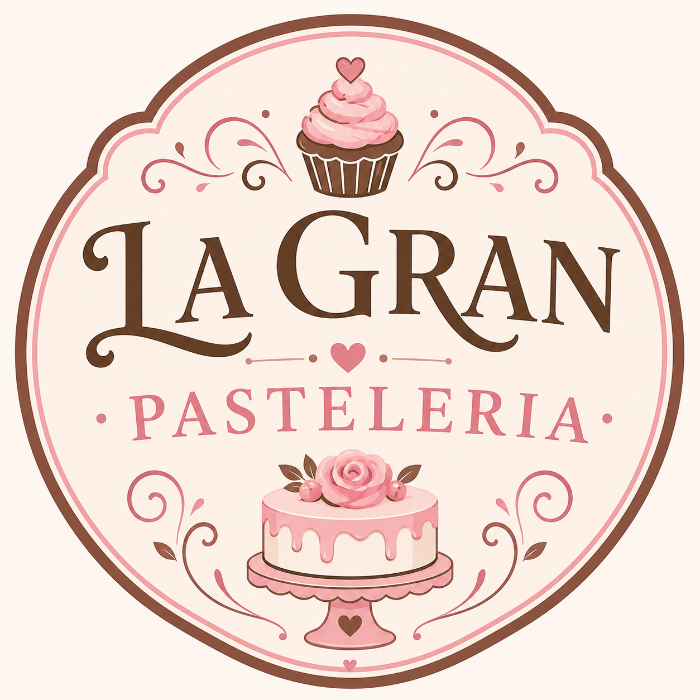
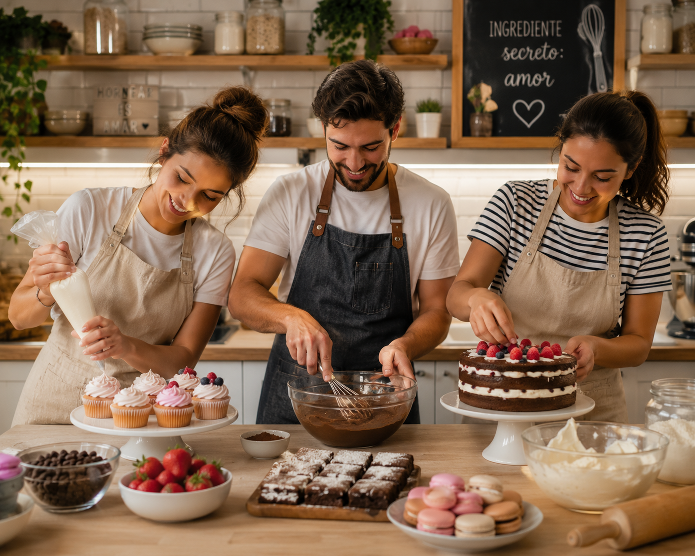
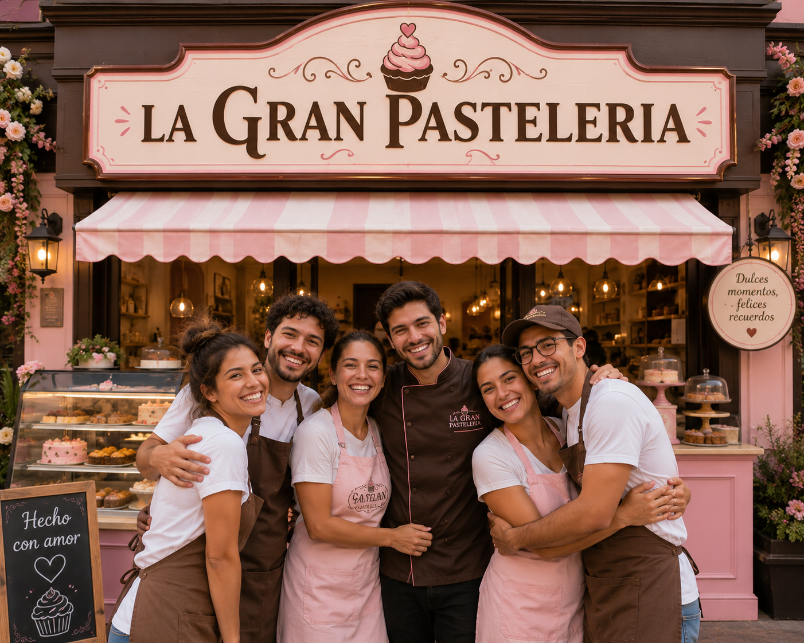
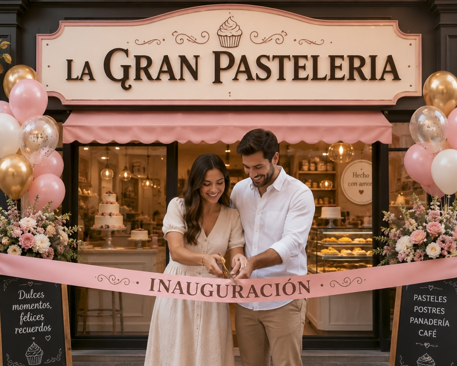

Somos una empresa dedicada a la elaboración de productos de repostería, con más de 10 años de experiencia
en el mercado. Nuestro objetivo es ofrecer a nuestros clientes productos de alta calidad, elaborados con ingredientes
frescos y naturales, y con un sabor inigualable.
En La Gran Repostería, nos esforzamos por mantenernos a la vanguardia en cuanto a técnicas de elaboración y
presentación de nuestros productos, para satisfacer las necesidades y gustos de nuestros clientes. Además, contamos
con un equipo de profesionales altamente capacitados y comprometidos con la calidad y el servicio al cliente.
Nos enorgullece ser una empresa que se preocupa por el medio ambiente, por lo que utilizamos materiales reciclables
en nuestros empaques y nos esforzamos por reducir nuestro impacto ambiental en todas nuestras operaciones.
En resumen, en La Gran Repostería nos apasiona lo que hacemos y nos comprometemos a ofrecer productos de alta
calidad, un excelente servicio al cliente y un impacto positivo en el medio ambiente.

Ofrecemos una amplia variedad de productos de repostería, desde pasteles y galletas hasta chocolates y dulces tradicionales.
Nuestros productos están elaborados con ingredientes de la más alta calidad y preparados por nuestros expertos reposteros. Nuestro propósito siempre va a ser ofrecer lo mejor a nuestros clientes y que esten completamente sastiesfchos.

En La Gran Repostería, nos esforzamos por ofrecer a nuestros clientes productos de alta calidad, elaborados con ingredientes
frescos y naturales, y con un sabor inigualable.
Además, contamos con un equipo de profesionales altamente capacitados y comprometidos con la calidad y el servicio al cliente.
Además, contamos con un equipo de profesionales altamente capacitados y
comprometidos con la calidad y el servicio al cliente.
Nos enorgullece ser una empresa que se preocupa por el medio ambiente,
por lo que utilizamos materiales reciclables en nuestros empaques y nos esforzamos por reducir nuestro impacto ambiental en
todas nuestras operaciones. Ofrecemos también una gran atención al cliente para que se sienta satisfecho y muy complacido con
nuestro local. Nos gustaría mucho que puedan degustar su paladar con nuestras recetas muy famosas.

La Gran Repostería fue fundada en el año 2010 por un grupo de apasionados por la repostería. Nuestro sueño era crear una
empresa que ofreciera productos de la más alta calidad y un servicio excepcional a nuestros clientes.
Derechos de autor © 2026 La Gran Pastelería Desarrollado por Doer